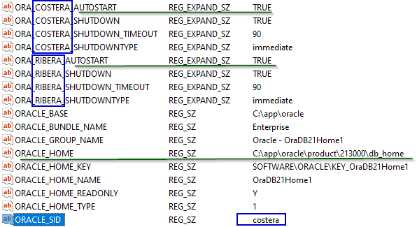
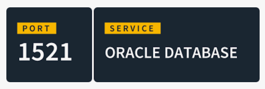
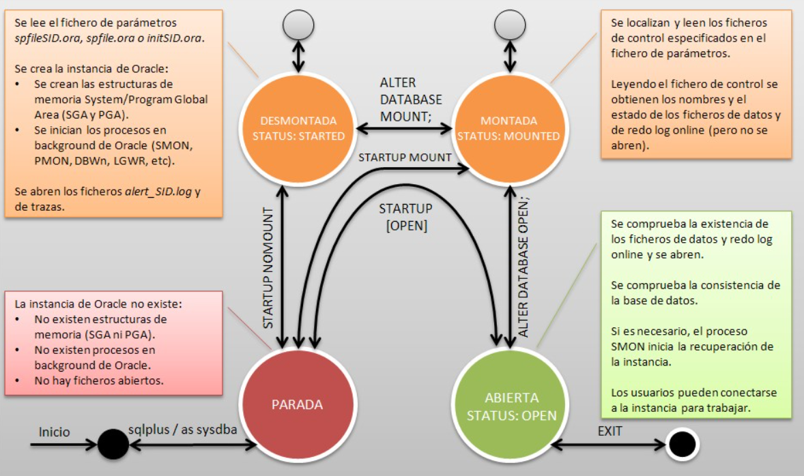
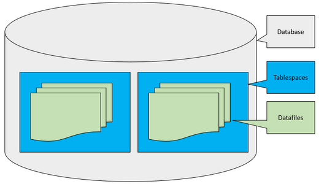
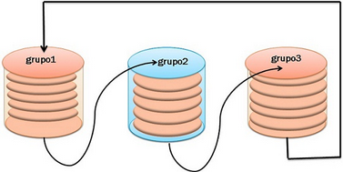

- Àmbit: Tota la Base de Dades. És la configuració més permanent.
- Què regeix: Principalment el joc de caràcters de la base de dades (
NLS_CHARACTERSET), que és crucial per a l'emmagatzematge de les dades. - Configuració: Es fixa durant la creació de la base de dades (amb la sentència
CREATE DATABASE) i és molt difícil de canviar posteriorment (requereix migracions complexes). - Prioritat: La més baixa. Sempre és sobreescrit pels nivells d'Instància i Sessió.
Configuració d'un SGBD
Configuració de l’entorn
Variables d’entorn essencials
- ORACLE_HOME: Ruta on està instal·lat el software d’Oracle (binaris, biblioteques...)
- ORACLE_BASE: Ruta arrel on es guarden dades, configuracions, logs i més
- ORACLE_SID: Identificador de la instància Oracle amb la qual es treballarà
- PATH: Variable del S.O. per accedir a les ordres d’Oracle des de qualsevol ruta (ex:
sqlplus) - NLS_LANG: Defineix idioma, territori i charset (ex:
SPANISH_SPAIN.WE8MSWIN1252)
🐧 En Linux
Pots veure o configurar aquestes variables amb:
$ echo $ORACLE_SID
$ echo $ORACLE_HOME
$ export ORACLE_SID=orclcdb # Canviar el valor de ORACLE_SID
$ echo $ORACLE_BASE
$ env # Llista totes les variables d’entorn
Exemple de configuració
export ORACLE_HOME=/opt/oracle/product/21c/dbhome_1 export ORACLE_BASE=/opt/oracle export ORACLE_SID=costera export PATH=$ORACLE_HOME/bin:$PATH
O fer canvis permanents en bashrc
vi ~/.bashrc --- fer canvis --- guardar --- carregar canvis sense reiniciar source ~/.bashrc
🖥️ En Windows
- Des de cmd amb ECHO (el path)
- La resta de configuracions, des del registre de windows (REGEDIT)
> echo %PATH%
> set
Pots modificar-les (el PATH) des de Propietats del sistema → Variables d'entorn.
Per vore les varibles d'entorn d'ORACLE s'ha de fer amb el (REGEDIT) i dins buscar ORACLE_HOME per exemple
Pots modificar-les des del Registre (regedit)
🔧 Exercici pràctic suggerit
Comprova el valor actual del teu ORACLE_SID, i canvia’l a una altra instància com “costera” o “ribera”. Després obre el regedit i comprova on apunta ORACLE_HOME.
Altres variables d'entorn interessants en REGEDIT
- ORA_SID_AUTOSTART
- ORA_SID_SHUTDOWN
- ORA_SID_SHUTDOWN_TIMEOUT
- ORA_SID_SHUTDOWNTYPE
Bones pràctiques
- Configura correctament l’entorn abans d’executar qualsevol eina com
sqlplusodbca - Canvia l’ORACLE_SID segons la base de dades amb què vols treballar
- Si tens més d’una base de dades, assegura’t que les variables són correctes per a cada sessió
- ORACLE_BASE i ORACLE_HOME són essencials per al correcte funcionament del SGBD
Configuració de les connexions
⚠️⚠️ En Windows, no deixar APIPA activat. Posar IP manualment
⚠️⚠️ Permetre el port 1521 en el Firewall 🛡️🧱🔥
Components clau per connectar-se a Oracle
Per establir una connexió entre un client i una base de dades Oracle, es necessita:
- Un listener actiu al servidor, configurar amb el fitxer
listener.ora - Un fitxer tnsnames.ora al client (i opcionalment al servidor)
- El fitxer sqlnet.ora per determinar l'ordre de resolució
📁 Fitxers implicats (ubicació típica)
-
EN EL SERVIDOR (LINUX)
$ORACLE_HOME/network/admin/listener.ora$ORACLE_HOME/network/admin/sqlnet.ora
EN EL CLIENT
$ORACLE_HOME/network/admin/tnsnames.ora
-
EN EL SERVIDOR (WINDOWS)
%ORACLE_BASE%/homes/%ORACLE_HOME_NAME%/network/admin/listener.ora%ORACLE_BASE%/homes/%ORACLE_HOME_NAME%/network/admin/sqlnet.ora
EN EL CLIENT
%ORACLE_BASE%/homes/%ORACLE_HOME_NAME%/network/admin/tnsnames.ora
Fitxer sqlnet.ora
Defineix l'ordre de cerca per resoldre noms:
SQLNET.AUTHENTICATION_SERVICES = (NONE)
NAMES.DIRECTORY_PATH = (TNSNAMES, EZCONNECT)
🛠️ Eines per configurar la xarxa
- netca: assistent per crear listeners i serveis ⚠️ Important, executar amb administrador
- netmgr: gestió gràfica de connexions Oracle
Exemple:
$ netca # Inicia l’assistent gràfic (en Linux o CMD)
$ netmgr # (també gràfic)
🔍 Verificació amb tnsping
Permet comprovar si la configuració funciona i si el listener està responent:
Esta verificació té sentit si es fa des d'una màquina distinta al servidor
$ tnsping orcl
Eixida esperada:
Used parameter files:
/opt/oracle/product/21c/dbhome_1/network/admin/sqlnet.ora
Used TNSNAMES adapter to resolve the alias
Attempting to contact (DESCRIPTION = (ADDRESS = (PROTOCOL = TCP)(HOST = localhost)(PORT = 1521))...)
OK (10 msec)
⚠️ Errors habituals
- Listener no iniciat →
lsnrctl start - El servei no està registrat correctament → revisar
GLOBAL_DBNAMEoSERVICE_NAME - El client no troba el tnsnames.ora → revisar ruta o variable
TNS_ADMIN
✅ Bones pràctiques
- Fer
tnspingabans de provar una connexió completa - Mantenir una còpia de seguretat dels fitxers de configuració
- En producció, usar noms DNS en lloc de IPs i restringir ports al tallafoc
Primera connexió
$ sqlplus / as sysdba
C:\Users\enric> sqlplus / as sysdba
.............
SQL> show con_name
SQL> select name from v$database;
SQL> show user
SQL> show pdbs
SQL> show sga
Navegar per les PDBs
$ sqlplus / as sysdba
SQL> show con_name
SQL> select name from v$database;
SQL> show user
SQL> show pdbs
SQL> alter session set CONTAINER=PDB1;
SQL> show pdbs
SQL> alter session set CONTAINER=PDB2;
SQL> show pdbs
SQL> alter session set CONTAINER=cdb$root;
SQL> show pdbs
🔧 Exercicis pràctics suggerits
✔️Instal·lar Oracle Instant Client (sqlplus) en altra màquina de la mateixa xarxa, configurar i fer: tnsping.
✔️Instal·lar SQL Developer en altra màquina de la mateixa xarxa, configurar nova connexió i provar .
Abans de continuar....
Fem un repàs de SQL
Accés al Repàs ..
Configuració de la instància
📘 Què és la instància?
En Oracle Database, una instància és el conjunt de processos en memòria i estructures de memòria que gestionen l'accés físic i l'ús d'una base de dades Oracle.
La Instància és el SGBD en execució
Una instància Oracle necessita una configuració específica per funcionar correctament: memòria, rutes, noms, processos, etc. Aquesta configuració es defineix mitjançant fitxers de paràmetres.
Fitxers de paràmetres
- spfile – Fitxer binari (Server Parameter File), llegit automàticament en iniciar la instància.
- pfile – Fitxer de text (init
.ora), utilitzat com a alternativa o còpia editable.
Crear un PFILE a partir d’un SPFILE
SQL> CREATE PFILE FROM SPFILE;
Crear un SPFILE a partir d’un PFILE
SQL> CREATE SPFILE FROM PFILE;
Ubicació típica: (en linux)
$ORACLE_BASE/oradata/dbconfig/NOMCDB/dbs/spfileNOMCDB.ora
Ubicació típica: (en windows)
$ORACLE_BASE/database/spfileSID.ora
On SID és el nom de la CDB
⚠️ El fitxer spfile no es pot manipular directament, o es produirà un error. Els valors del fitxer s'han de modificar
mitjançant sentències SQL ( ALTER SYSTEM SET )
Dins del fitxer spfile___ es guaden els valors dels paràmetres de la instància, que es carregen en memòria només esta arranca.
Tipus de paràmetres
- Estàtics: Es poden modificar però no fan efecte fins que es reinicie la instància
- Dinàmics: Es poden canviar en temps real sense reiniciar
- Scope:
MEMORY– Canvi temporal (fins al proper reinici)SPFILE– S’emmagatzema per al proper reiniciBOTH– Canvi immediat i persistent (si el paràmetre ho permet)
Consultar paràmetres actuals
Consulta de paràmetres:
SQL> SHOW PARAMETER o SQL> SHOW PARAMETER sga;
SQL> SHOW SPPARAMETER o SQL> SHOW SPPARAMETER sga;
SHOW PARAMETERS->Consulta els valors actuals en ús per la instància.
SHOW SPPARAMETERS
->Consulta els valors que hi ha desats a l’SPFILE (Server Parameter File)
Consulta de totes les fonts dels valors:
SQL> SELECT name, value, isspecified, isdefault , issys_modifiable, isses_modifiable FROM v$parameter WHERE name LIKE 'sga%';
Modificar un paràmetre
Per exemple, modificar la mida de la SGA:
SQL> ALTER SYSTEM SET sga_target=800M SCOPE=SPFILE;
(cal reiniciar perquè tingui efecte)
Exemples de parametres dinamics i estatics
sessions estatic
open_cursors dinamic
processes estatic
sort_area_size dinamic
optimizer_mode dinamic
Reinici de la instància
Per aplicar canvis definitius:
SQL> SHUTDOWN IMMEDIATE; SQL> STARTUP;
Resum d'ordres útils
SHOW PARAMETER nom– Consulta ràpidaALTER SYSTEM SET ...– Per canviar valorsCREATE PFILE FROM SPFILE– Exportar config binàriaCREATE SPFILE FROM PFILE– Generar spfileSTARTUP PFILE='...'– Iniciar amb fitxer concret
⚠️ Bones pràctiques
- No modificar directament l’SPFILE (només amb SQL)
- Fer còpia del PFILE abans de fer canvis
- ⚠️ Canvis incorrectes poden impedir que la instància arranque
==> Com saber quants parametres hi ha en la instància?
SELECT COUNT(*) FROM v$spparameter WHERE value IS NOT NULL; SELECT COUNT(*) FROM v$parameter WHERE value IS NOT NULL;
Comptes d’administració
👤 Comptes d'administració predeterminats
Quan es crea una base de dades Oracle (CDB o PDB), es generen automàticament diversos comptes especials:
- SYS: usuari principal amb privilegis totals sobre la base de dades.
- SYSTEM: usuari administratiu per tasques generals i desenvolupament.
- PDBADMIN: usuari administrador dins d’una PDB específica.
Aquests comptes es creen automàticament en el moment de crear la base de dades amb l’eina DBCA o amb SQL.
Rols associats
- SYSDBA: accés complet, inclou totes les capacitats (startup, shutdown, backup, etc.).
- SYSOPER: rol amb permisos limitats a operacions bàsiques (iniciar, aturar, consultar).
- SYSBACKUP, SYSDG, SYSKM: rols especialitzats (backup, dataguard, encriptació).
📍 Ubicació dels comptes
Els comptes SYS i SYSTEM s’ubiquen dins la CDB (contenidor principal) i també dins de cada una de les PDB. Estos comptes són uns comptes "especials" anomenats COMUNS, que están en totes les PDBs i en la CDB principal
Es pot canviar de contenidor amb:
SQL> ALTER SESSION SET CONTAINER = nom_pdb;
Canvi de contrasenya
SQL> ALTER USER system IDENTIFIED BY nova_contrasenya;
SQL> ALTER USER pdbadmin IDENTIFIED BY segura123;
Bones pràctiques
- Canviar les contrasenyes per defecte després de la instal·lació
- Limitar l’ús de SYS només a tasques crítiques
- Crear usuaris administradors propis amb rols específics si cal
- ⚠️ No treballar habitualment amb SYS/SYSTEM, especialment en entorns de producció
🔍 Consultar rols assignats
SQL> SELECT * FROM dba_role_privs WHERE grantee = 'SYSTEM';
🧪 Exemple pràctic
Crear un nou usuari administrador dins una PDB:
SQL> ALTER SESSION SET CONTAINER = nom_pdb; SQL> CREATE USER admin_pdb IDENTIFIED BY 1234; SQL> GRANT dba TO admin_pdb;
Donar més privilègis...
GRANT SYSDBA TO admin_pdb;
--- I es pot connectar com sysdba sqlplus admin_pdb/1234 AS SYSDBA
Això li dóna el mateix nivell d'accés que SYS, però sense ser el propietari del diccionari de dades. És el màxim privilegi possible per a un usuari que no és SYS
En altres SGBDs, l'usuari administrador varia...
| Sistema | Usuari administrador | Descripció breu |
|---|---|---|
| Oracle | SYS |
Superusuari amb accés al diccionari de dades. |
| MySQL | root |
Superusuari amb tots els privilegis sobre el servidor. |
| PostgreSQL | postgres |
Superusuari creat per defecte durant la instal·lació. |
Arrancada i parada de la instància Oracle
Com arranca una instància Oracle?
Una instància Oracle pot estar en diferents estats:
- NOMOUNT: només carregat l’SPFILE/PFILE. No hi ha accés a la BBDD.
- MOUNT: es carrega el control file, però la BBDD continua tancada.
- OPEN: la BBDD està completament disponible per a operacions.
Ordres per arrancar pas a pas:
SQL> STARTUP NOMOUNT;
SQL> STARTUP MOUNT;
SQL> ALTER DATABASE OPEN;
Arrancada completa
Per arrancar la base de dades directament a mode OPEN:
SQL> STARTUP;
⚠️ Necessites rols SYSDBA o SYSOPER per fer aquesta acció.
Parada de la instància
Opcions disponibles:
- IMMEDIATE – Atura connexions de forma controlada (recomanat)
- NORMAL – Espera que els usuaris es desconnecten
- ABORT – Tall immediat (pot deixar la base de dades en estat incoherent)
Exemples:
SQL> SHUTDOWN IMMEDIATE;
SQL> SHUTDOWN NORMAL;
SQL> SHUTDOWN ABORT;
En Windows
Executar sqlplus / as sysdba com a usuari oracle o administrador:
C:\> sqlplus / as sysdba
SQL> STARTUP;
SQL> SHUTDOWN IMMEDIATE;
🐧 En Linux
Cal que les variables d’entorn estiguin ben configurades:
$ . oraenv
$ sqlplus / as sysdba
SQL> STARTUP;
SQL> SHUTDOWN IMMEDIATE;
Gestionar contenidors (PDB)
Després d'obrir la CDB, cal obrir les PDB individualment si no estan configurades per obrir-se automàticament:
SQL> ALTER PLUGGABLE DATABASE ALL OPEN;
SQL> ALTER PLUGGABLE DATABASE nom_pdb OPEN;
Per tancar-les:
SQL> ALTER PLUGGABLE DATABASE ALL CLOSE IMMEDIATE;
SQL> ALTER PLUGGABLE DATABASE nom_pdb CLOSE IMMEDIATE;
Bones pràctiques
- Utilitza sempre
SHUTDOWN IMMEDIATEper evitar corrupcions - Comprova que les PDB estan obertes després del
STARTUP - ⚠️ Si fas
ABORT, executaRECOVERo revisa la coherència de la BBDD després - Per entorns de pràctiques, pots fer
STARTUP MOUNTper estudiar fases inicials
Comprovar estat
SQL> SELECT status FROM v$instance;
SQL> SELECT name, open_mode FROM v$pdbs;
Configuració de l’emmagatzematge
Què és un tablespace?
Un tablespace és una unitat lògica d’emmagatzematge dins d’Oracle. Està format per un o més fitxers de dades (datafiles) que resideixen al disc i contenen les dades reals de la base de dades.
Cada datafile pot estar en un disc físic diferent
Els usuaris guarden les seues dades en tablespaces, com per exemple USERS
SYS guarda les seues dades en el tablespace 'especial' SYSTEM
Crear tablespaces addicionals ajuda a organitzar les aplicacions que es creen sobre la base d'esquemes
Utilitzar tablespaces és fonamental per a la seguretat
Mètodes de gestió de l’espai
- Manual: l’administrador ha de crear i ampliar els fitxers de dades manualment.
- Automàtic: el sistema crea i amplia els datafiles automàticament amb
AUTOEXTEND.
Tipus de tablespaces
- Existeixen en instal·lar SYSTEM, SYSAUX, UNDO, TEMP, USERS
- El tablespace USERS és el que es farà servir per guardar dades de les taules dels usuaris (si no es creen tablespaces addicionas per este menester)
- Es poden crear tablespaces TEMPORALS, PERMANENTS, DE SOLS LECTURA, i posar un tablespace OFFLINE o ONLINE
- El "undo" tablespace és gestionar la informació de reversió (les versions anteriors de dades per a ROLLBACK, lectura consistent, etc.).
- TEMP s’utilitza per a emmagatzemar dades temporals que Oracle genera durant l’execució de certes operacions SQL (i no caben en memòria PGA). Oeracions com sort, index, join, etc..
- El tablespace SYSTEM és obligatori i no es pot eliminar. SYSTEM guarda el DD, el codi PL/SQL, objectes de SYS i part de SYSTEM
- El tablespace SYSAUX actua com a “complement” del SYSTEM. Components opcionals (AWR, RMAN, Enterprise Manager, etc.). SYSAUX també és obligatori. La seva funció és descarregar el SYSTEM d’una gran quantitat de components i metadades que abans s’hi guardaven, per millorar el rendiment i l’organització.
Consultar informació d’emmagatzematge
Consulta dels tablespaces:
SQL> SELECT tablespace_name, status from dba_tablespaces;
Consulta dels fitxers de dades: Molt útil per saber les rutes físiques als fitxers del s.o.
SQL> SELECT file_name, tablespace_name from dba_data_files;
Crear un nou tablespace manualment
Exemple de creació amb gestió manual:
SQL> CREATE TABLESPACE dades
DATAFILE '/opt/oracle/oradata/COSTERA/dades01.dbf' SIZE 10M;
Exemple amb autoextensió activada:
SQL> CREATE TABLESPACE dades
DATAFILE '/opt/oracle/oradata/COSTERA/dades01.dbf'
SIZE 10M
AUTOEXTEND ON
NEXT 5M
MAXSIZE 100M;
Afegir un fitxer de dades a un tablespace
SQL> ALTER TABLESPACE dades ADD DATAFILE '/opt/oracle/oradata/COSTERA/dades02.dbf' SIZE 20M;
Ubicació per defecte (si no s’especifica)
Si no s’indica ruta explícita, Oracle fa servir la variable:
DB_CREATE_FILE_DEST
Si DB_CREATE_FILE_DEST no te valor, la ubicació serà $ORACLE_HOME/dbs (en Unix/Linux)
o %ORACLE_HOME%\database (en Windows)
Des d'Oracle 21c XE / 23ai Free, Oracle no usa directament $ORACLE_HOME/dbs com ubicació de treball. Cada base de dades (CDB o Free) té el seu propi “dbconfig_directory” :
/opt/oracle/oradata/dbconfig/'DB_NAME'/
I oracle utilitza este dbconfig_directory/dbs per a operacions relatives
Exemple de creació de tablespace/datafile amb ruta automàtica:
SQL> CREATE TABLESPACE dades123 DATAFILE 'dades123' SIZE 10M;
Bones pràctiques
- Activa
AUTOEXTENDper evitar errors per espai - Assigna un tablespace específic als usuaris nous (evita usar
SYSTEM) - Utilitza rutes clares i separades per a cada base de dades
- ⚠️ Controla la mida màxima de creixement per no omplir el disc
Exemple complet
-- Crear tablespace
CREATE TABLESPACE aplicacio
DATAFILE '/opt/oracle/oradata/COSTERA/aplicacio01.dbf'
SIZE 20M
AUTOEXTEND ON
NEXT 5M
MAXSIZE UNLIMITED;
-- Crear un usuari i assignar-li un tablespace (DEFAULT TABLESPACE)
-- Tots els objectes que cree este usuari s'emmagatzemaran dins del tablespace
CREATE USER us_aplicacio IDENTIFIED BY 1234
DEFAULT TABLESPACE aplicacio
QUOTA UNLIMITED ON aplicacio;
-- Des de dins de l'usuari
-- En el moment de crear un objecte, especificar en quin TABLESPACE s'emmagatzemarà
CREATE table tabla1 ( codi number(6), Nom varchar2(40) ) TABLESPACE aplicacio2;
CREATE index indice1 on tabla1(nom DESC) TABLESPACE aplicacio2;
-- Si volem que al crear un usuari, sense especificar res, se li assigne un tablespace diferent d'USERS
ALTER DATABASE DEFAULT TABLESPACE dades001; -- dades001 deu estar creat !!
-- A partir d'este moment, qualsevol CREATE USER sense especificar DEFAULT TABLESPACE usarà "dades001".
Diccionari de dades
📘 Què és el diccionari de dades?
El diccionari de dades d’Oracle és un conjunt de vistes especials que contenen metadades sobre:
- Taules, vistes, columnes
- Usuaris, rols i privilegis
- Estructura de la base de dades, espai, fitxers
- Permisos d'accés i auditories
El diccionari és gestionat automàticament per Oracle i està format per milers de vistes prefixades per:
USER_→ Mostra dades del propi usuari connectatALL_→ Mostra dades accessibles per l’usuari (les seves i d’altres)DBA_→ Mostra totes les dades del sistema (requereix permisos de DBA)V$___→ Vistes dinàmiquesTABS, DUAL, DICTIONARY→ Vistes "legacy"
El diccionari s'emmagatzema en l'esquema de SYS. El DD pertany a SYS
SYS està present en CDB$ROOT i en totes les PDB
Les dades del DD estan en MAJÚSCULES
🔍🔍 Consultes habituals
📂 Taules i columnes
-- Taules creades per l’usuari actual
SELECT table_name FROM user_tables;
-- Columnes d’una taula concreta
SELECT column_name, data_type, data_length
FROM user_tab_columns
WHERE table_name = 'EMPLEATS';
👤 Usuaris i rols
-- Llista d’usuaris
SELECT username FROM dba_users;
-- Rols assignats a un usuari
SELECT * FROM dba_role_privs WHERE grantee = 'SYSTEM';
🔐 Privilegis
-- Privilegis d’usuari
SELECT * FROM user_sys_privs;
-- Privilegis de rol
SELECT * FROM role_sys_privs WHERE role = 'DBA';
📁 Estructures d’emmagatzematge
-- Fitxers de dades
SELECT file_name, tablespace_name, bytes/1024/1024 AS MB
FROM dba_data_files;
-- Espai lliure
SELECT tablespace_name, file_id, block_id, bytes/1024/1024 AS MB
FROM dba_free_space;
📘 Bones pràctiques
- Utilitza
USER_si treballes com a usuari no administrador - Utilitza
DBA_per fer auditories completes (només si etsSYSo tensDBA) - Fes servir
DESCRIBEoDESCper veure l’estructura de les vistes del diccionari
Consell final
El diccionari de dades és clau per conèixer l'estat intern de la base de dades, i resulta imprescindible per a administradors i desenvolupadors.
🧾 Quadern de bitàcola (Redo Log Files)
📒 Què és?
El quadern de bitàcola en Oracle (en anglès, log file o redo log) és un concepte clau per garantir la recuperació de dades i la integritat del sistema en cas de fallada.
El 'quadern' es composa d'un grup de fitxers especials que Oracle utilitza per registrar tots els canvis que es fan a la base de dades, abans que aquests es confirmen físicament als fitxers de dades
També conegut com: Redo log files, Fitxers de redo, Fitxers de registre de redo
Els fitxers redo log són fitxers essencials que enregistren totes les modificacions fetes a la base de dades. Aquest registre permet a Oracle recuperar les dades en cas de fallada abans que les dades siguen escrites definitivament als fitxers de dades.
🔧 Per a què serveix?
- Permet recuperar la base de dades després d’una fallada (ex: tall elèctric).
- Registra instruccions com INSERT, UPDATE, DELETE, etc.
- No registra consultes SELECT perquè no modifiquen dades.
🗂️ Tipus de redo logs:
- Online Redo logs (en línia): Són els principals. Oracle escriu contínuament en aquests.
- Offline Redo logs (archived redo logs): Si la base de dades està en mode ARCHIVELOG, els redo logs antics es guarden per a recuperació completa.
🔁 Funcionament cíclic
Oracle utilitza un conjunt de fitxers redo log en mode circular (anells). Quan un fitxer es plena, s’escriu al següent. Quan es completa un cicle, torna a començar pel primer.
Com més grups de redo logs tinguis, més eficiència i seguretat ofereix el sistema.
Estructura típica
Una instància pot tenir múltiples grups de redo logs, cadascun amb un o més membres (fitxers físics replicats):
GROUP 1 → redo01.log GROUP 2 → redo02.log GROUP 3 → redo03.log
Normalment hi ha tres fitxers Redo Log, que van rotant. Quan un es plena, pasa al següent, i quan l'últim es plena, pasa altra vegada al primer
El procés de memòria LGWR s'encarrega de fer açò.
(forçar rotació dels fitxers Redo Log)
SQL> alter system switch logfile;
Afegir un nou grup de redo logs
SQL> ALTER DATABASE ADD LOGFILE GROUP 4
('/opt/oracle/oradata/NOM_BBDD/redo04.log') SIZE 50M;
Afegir un membre (fitxer addicional) a un grup existent
SQL> ALTER DATABASE ADD LOGFILE MEMBER
'/opt/oracle/oradata/NOM_BBDD/redo01b.log' TO GROUP 1;
🔍 On es troben?
Pots veure on estan consultant el DD:
SELECT member FROM v$logfile;
select * from v$log;
📍 Ubicació típica dels redo logs
/opt/oracle/oradata/NOM_BBDD/redo0X.log
(Es defineix durant la creació de la base de dades amb DBCA)
🧪 Practica: Busca en la maquina servidor la ruta concreta dels teus REDO LOGS
⚠️En un entorn de producció, estos fitxers deurien estar en un disc físic diferent al que conté els datafiles
En cas d’error amb els redo logs
Poden impedir l’inici de la base de dades. Per exemple, si s’esborra un fitxer o falla un disc.
Es pot fer servir una ordre com:
SQL> ALTER DATABASE CLEAR UNARCHIVED LOGFILE GROUP 1;
⚠️ Només per a casos d’emergència!
ARCHIVELOG o Offline Redo Log

El Online Redo Log ve activat per defecte, però el Offline Redo Log ve desactivat per defecte
El procés de memòria ARCH s'encarrega de portar el Offline Redo Log, també conegut com ARCHIVELOG.
ARCHIVELOG guarda fora de línia els arxuis redo log que no estan actius. D’esta manera, quan es fa la transició de l’últim al primer, abans el primer s’ha guardat fora de línia, i no hi ha perill de sobreescriure transicions que ocupen massa espai
Com activar el ARCHIVELOG
SQL> archive log list SQL> alter system set log_archive_dest_1='LOCATION=/archivelog/carpeta/arch' SCOPE=SPFILE; SQL> alter system set log_archive_format='arch_%r_%t_%s.arc' scope=spfile; SQL> alter system set LOG_ARCHIVE_START=TRUE SCOPE=spfile; SQL> shutdown immeditate; startup mount; SQL> alter database archivelog; SQL> alter database open; SQL> archive log list SQL> select name, log_mode from v$database; SQL> ALTER SYSTEM SWITCH LOGFILE;
Bones pràctiques
- Tenir almenys 3 grups de redo logs
- Tenir més d’un membre per grup (redundància)
- Els redo logs han d’estar en discos ràpids i fiables
- No compartir físicament el disc dels redo logs amb altres fitxers crítics
- Els fitcher REDO deuen estar en altre disc físic
🧾 Fitxers log
Què són els fitxers log?
Els logs en Oracle fan referència als fitxers de registre que el sistema genera automàticament per monitorar l’activitat, errors i operacions internes. Aquests fitxers són imprescindibles per a qualsevol tasca de diagnòstic o auditoria.
Tipus de logs
- Alert log: és un dels principals fitxers de registre del sistema, mostra missatges d’arrencada, aturada, errors greus, missatges de SHUTDOWN i STARTUP en els diferents modes, errors greus o crítics (ORA-xxxxx), creació, canvi o eliminació de tablespaces, datafiles o redo logs, ...i més...
- Trace files: .trc .trm ➜ fitxers de seguiment detallat per a processos específics o errors concrets.
- Listener log: fitxer que recull les connexions i activitats del listener.
- log d'instal·lació del SW: fitxer que recull les accions d'instal·lació.
- log d'instal·lació de la BBDD: fitxer que recull les accions d'instal·lació.
- log d'instal·lació de Patch/upgrades: fitxer que recull les accions d'instal·lació.
- log de còpies de seguretat: fitxer que recull les accions de còpies de seguretat (fetes o fallides) de Datapump i RMAN.
- log d'administració de WEB d'OEM: Oracle Enterprise Manager
📁 Ubicació dels fitxers
La majoria dins de $ORACLE_BASE/diag/ , però també en $ORACLE_BASE/oraInventory/logs/
-
Del fitxer alert:
- Unix/Linux:
$ORACLE_BASE/diag/rdbms/<db_name>/<sid>/trace/
- Windows:
%ORACLE_BASE%\diag\rdbms\
\<sid>\trace\
El fitxer d’alertes sol anomenar-se:
alert_SID_.log -- Substitueix SID pel nom del CDB
🧪 Practica: Busca en la maquina servidor tots els fitxers que continguen la paraula "alert" (i la seua ruta). Després, fes una classificació dels fitxers de log i relaciona amb les variables d'entorn (ORACLE_BASE, ORACLE_HOME, etc)
🔍 Consultar l’alert log
Un fitxer log sol ser molt extens, amb molta informació distinta, de diferents esdeveniments, el que fa dificultós trobar dades concretes
Com actuar
- Localitzar el fitxer
- Esbrinar com s'emmagatzema l'esdeveniment que es vol consultar
- Filtrar per l'esdeveniment
- Buscar al voltant de l'esdeveniment més informació rellevant
find / -name alert 2>/dev/null
-- L'event que volem consultar es quan arranca la BBDD => Correspon amb "Starting"
cat /opt/oracle/diag/rdbms/free/FREE/trace/alert_FREE.log | grep Starting
cat /opt/oracle/diag/rdbms/free/FREE/trace/alert_FREE.log | grep -A 1 Starting També es pot consultar entrades recents:
$ tail -f alert_costera.log # En temps real (Linux) Exemples reals de línies dins de alert_FREE.log
Starting ORACLE instance (normal)
ORACLE instance started.
Total System Global Area 2147483648 bytes
Fixed Size 9133424 bytes
Variable Size 637534208 bytes
Database mounted.
Database opened.
Completed: ALTER DATABASE OPEN
ALTER SYSTEM SET sga_target=2048M SCOPE=BOTH;
ORA-00600: internal error code, arguments
Errors in file /opt....
ARC0: Archiving completed. Archiving:
Buscar per un error concret
grep ORA- alert_FREE.log Buscar per una data concreta
grep "2025-10-26" alert_FREE.log Usar ADRCI
ADRCI es basa en ADR (Automatic Diagnostic Repository) és una estructura de directoris que Oracle utilitza per desar tota la informació de diagnòstic, com:
- fitxers alert log
- trace files (traces dels processos)
- informes d’errors (incident reports)
- core dumps
- dades de seguiment de rendiment
... que normalment es troba a: $ORACLE_BASE/diag/
El ADRCI és l’eina amb què pots accedir i analitzar tot això sense haver d’obrir els fitxers manualment. És una CLI (Command-Line Interface) que et permet veure, filtrar i gestionar els incidents.
Des de bash:
$ adrci
Exemple d'ús bàsic
$ adrci
adrci> show homes
ADR Homes:
diag/rdbms/free/FREE
adrci> set home diag/rdbms/free/FREE
adrci> show alert -tail 20
adrci> show alert -p "message_text like '%ORA-%'"
adrci> show incident
Vistes de diagnostic
Des d’Oracle 11g, el sistema de diagnòstic automàtic (ADR – Automatic Diagnostic Repository)
permet llegir el contingut del alert.log des de SQL amb la vista V$DIAG_ALERT_EXT
Exemple
SELECT originating_timestamp, message_text
FROM V$DIAG_ALERT_EXT
WHERE message_text LIKE '%Starting%';
📞 Listener log
El fitxer de registre del listener mostra informació sobre connexions, errors i temps de resposta.
Ubicació típica:
$ORACLE_BASE/diag/tnslsnr/<host>/listener/trace/listener.log
exemple
cat /opt/oracle/diag/tnslsnr/a2444629be58/listener/trace/listener.log | grep establish o
cat /opt/oracle/diag/tnslsnr/a2444629be58/listener/trace/listener.log | grep establish | grep 26-OCT.. i amb adrci
show home
set home diag/........../listener
show alert -tail 10
show alert -p "message_text like '%CONNECT%'"
show alert -p "message_text like '%establish%'" -- vore connexions
show alert -p "message_text like '%TNS-%'" -- vore errors de xarxa
Recomanacions
- Revisa l’alert log després de qualsevol
startup,shutdowno error inesperat - Configura eines de rotació de logs per evitar que ocupin massa espai
- Utilitza
v$diag_infoper consultar rutes oficials dels directoris - Els trace files poden ajudar a identificar errors que no apareixen en altres llocs
Recursos addicionals
🎯 Tablespaces i Datafiles
🎯 Ús d'sqlplus
🎯 Ús de vi
🎯 Gestió de Dates en ORACLE
Els paràmetres NLS (National Language Support) a Oracle Database es gestionen en tres nivells jeràrquics. Aquesta jerarquia determina quina configuració (llengua, format de data, ordenació, etc.) s'aplica en cada moment.
- Nivell de DATABASE
- Nivell d'Instància
- Nivell de sessió
🌎 NLS_DATABASE_PARAMETERS
⚙️ NLS_INSTANCE_PARAMETERS
- Àmbit: La Instància del servidor Oracle. S'aplica a totes les sessions que es connecten, excepte si la sessió ho sobreescriu.
- Què regeix: Estableix els valors per defecte (defaults) per a la majoria de paràmetres NLS (com
NLS_LANGUAGEoNLS_DATE_FORMAT) abans que la sessió es connecti. - Configuració: Es llegeix des del fitxer d'inicialització (
pfile/spfile). Cal reiniciar la instància per aplicar els canvis. - Prioritat: Mitjana. Sobreescriu el nivell de Base de Dades, però és sobreescrit pel nivell de Sessió.
💻 NLS_SESSION_PARAMETERS
- Àmbit: La Sessió actual de l'usuari. És el nivell més flexible i el que realment s'utilitza per a les consultes.
- Què regeix: Com es mostren i s'interpreten les dades durant l'execució d'una consulta (ex. format de data, símbol decimal, regles d'ordenació).
- Configuració: S'estableix mitjançant la variable de client
NLS_LANGde forma dinàmica amb la comandaALTER SESSION SET... - Configuració: S'estableix mitjançant la variable de client
NLS_LANGestablint una variable d'entorn del sistema operatiu $NLS_LANGNLS_LANG = Language_Territory.Charset en el fitxer .bashrc o puntualment amb EXPORT - Exemple : export NLS_LANG=CATALAN_SPAIN.AL32UTF8 o dins del .bashrc
- Prioritat: La més alta. Aquests valors sempre sobreescriuen la configuració de la Instància i de la Base de Dades.
🔢 Resum de la Jerarquia i Prioritat
El valor que utilitza Oracle per a la majoria d'operacions de presentació de dades sempre segueix aquesta lògica: Sessió > Instància > Base de Dades.
| Paràmetre | Àmbit d'Aplicació | Mètode de Configuració | Prioritat |
|---|---|---|---|
| NLS_DATABASE_PARAMETERS | Base de Dades Completa (Emmagatzematge) | Durant el CREATE DATABASE |
Baixa (Només per defecte) |
| NLS_INSTANCE_PARAMETERS | Instància del Servidor (Valors per Defecte) | SPFILE / PFILE (Requereix reiniciar) |
Mitjana |
| NLS_SESSION_PARAMETERS | Sessió d'Usuari Actual (Presentació) | NLS_LANG del client o ALTER SESSION |
Més Alta |